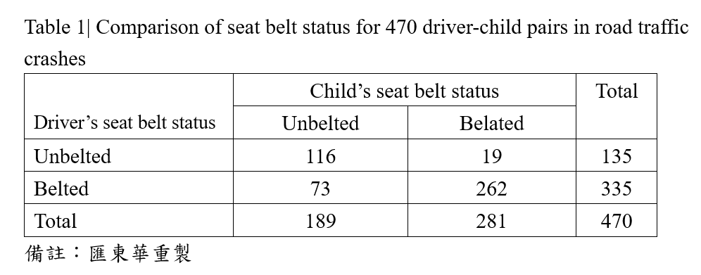

匯東華統計顧問有限公司
匯東華統計顧問有限公司
"匯東華-認真作好每件事"
~統計，不再是阻力，而是助力~

BMJ小小統計問題(60)：
Statistical tests: matched pairs categorical data (統計檢定：配對的類別變數)
前言：
這幾周是配對(matched, pair)的研究設計與統計分析週。配對是控制干擾因子常見且有效的做法，在結局變數為連續性變數的組別比較中，以paired t test 最為常見，類別變數則為本期所介紹的McNemar’s test，多變項迴歸分析近幾年盛行的為propensity score matching (PSM)。10將舉辦配對研究設計與分析的實體/線上課程，將會講解與操作教學這些內容，有興趣的朋友歡迎至匯東華官網/課程報名區觀察課程介紹及報名資訊。Hope u enjoy it.
題目：
研究人員調查安全帶在保護發生車禍兒童方面的效果，他們選取1984年至1992年加拿大地理區域內所有導致傷亡的車禍的樣本。納入條件為：只有當其中一名乘客的年齡是4-14歲，並且所有乘客的安全帶狀態(系安全帶或未系安全帶)都是已知的，才會選擇該發生事故的汽車。
樣本包括470輛發生車禍的汽車。對於只有一個兒童的汽車，研究人員記錄汽車裡的孩子和司機是否有繫安全帶，為一對測量值。若一輛車超過一個兒童，則隨機選取其中一位，進行調查。下表顯示470對配對中每對駕駛員和兒童的安全帶狀態間之關聯。研究人員報告發現，司機和兒童繫安全帶的比例存在顯著差異(P=0.0001)。總體而言，59.8%的兒童系安全帶，而成年人系安全帶的比例為71.3%。

使用下列何項統計檢定來比較出車禍時，兒童和司機繫安全帶的比例？
a) χ2 test
b) Fisher's exact test
c) McNemar's test
答案：
McNemar's test(答案c)將被用來比較兒童和司機繫安全帶之比例。
詳細說明：
McNemar's test此檢定用於比較二分類測量的配對數值。這名兒童和司機的安全帶狀態是配對的，因為他們在事故發生時都在同一輛車上。表格呈現兒童和司機都是繫安全帶、都沒有繫安全帶、或只有一人繫安全帶。
在本例中，虛無假設為在抽樣的母群體中，兒童和司機在事故發生時繫安全帶的比例沒有差別。重要的是須考慮測量是成對的。兒童和司機繫安全帶的比例只有在不一致的兩組(兒童繫安全帶而司機沒繫，反之亦然)間存在差異時才會有所不同。本檢定之P值為P=0.0001，因此拒絕虛無假設，接受對立假設，得出的結論是，司機和兒童繫安全帶的比例有顯著差異。之所以出現這種統計上的顯著差異，主要是因為兒童相較於司機繫安全帶的機率更低。整體而言，281名(59.8%)兒童及335名(71.3%)成人有繫安全帶。特別是，在事故發生時，繫安全帶的335名司機中，同車的73名(21.8%)兒童沒有繫安全帶。相較下，在兒童繫安全帶時發生的281起事故中，僅有19名司機(6.8%)沒有繫安全帶。
χ2 test (答案a)和Fisher exact test (答案b)是對兩個變數間關聯的統計檢定，在這些變數中，測量層次為名義變數(nominal variable)，每個變數至少有兩個可能的類別。在這些統計檢定中，資料彼此間是獨立的，並非配對，即觀察資料來自同一個人。因為兩個變數都是名義變數測量的，所以他們之間的關聯可以用列聯表表示。
χ2 test可以用來檢定，如，兒童的性別是否與事故發生時安全帶的狀態有關。這些觀察結果可能是在同一個同事身上進行的，因此不可能進行匹配。χ2 test可以用來檢定，如兒童性別是否與事故發生時安全帶的狀態有關。這些觀察結果可能是在同一個兒童身上進行的，因此不可能進行匹配。這個統計檢定的虛無假設是，在取樣的母群體中，事故發生時佩戴安全帶的男孩和女孩的比例沒有差別。這是對兩獨立母群體比例差異的測試。χ2 test的P值來自於繫安全帶和未繫安全帶的女孩和男孩的觀察次數與期望次數間的差異。觀察次數是在樣品中實際看到的次數。男孩和女孩繫安全帶的期待次數來自繫安全帶的兒童總數，在虛無假設為真的情況下，則在不同性別間的分佈比例將與母群體抽出之樣本中所見的性別分佈比例相同。不繫安全帶的不同性別期望次數將以類似之方式得到。在虛無假設下，觀察次數和期望次數應該相等。觀察次數和期望次數間的任何差異愈大，推導出的P值就愈小，因此提供更強的證據來拒絕虛無假設，支持對立假設。當期望次數較小時，則使用Fisher exact test代替χ2 test。
Reference:
[1] Halman SI, Chipman M, Parkin PC, Wright JG. Are seat belt restraints as effective in school age children as in adults? A prospective crash study. BMJ 2002;324:1123
Cite this as: BMJ 2011;343:d6623

數據串接與清洗
數據是礦藏，數據清洗是挖出鑽石的第一步，尤其是巨量知識。數據清洗或串接執行過程需要細心與專注，且有可能會消耗許多時間和精力，就由我們來替各位處理掉這個大麻煩。
全民健保研究資料庫、國外大型資料庫資料非常齊全，種類多，需要串接與清洗，進行正規化後才能更進一步進行資料探勘與統計分析。

Fig1.同一個Project資料散落在不同tables，無法使用

Fig2.整併與清理為可分析的table

Fig.3整理和分析後形成有意義的知識
概念與流程示意圖

教育培訓
課程規劃核心為以「學習者」為中心進行「傳承」
以學習者為中心，結合陳秀敏博士十多年來的統計實務以及教學經驗，設計適合學員學習方式，開設課程，達到有效學習。
開設線上統計學院
SPSS基礎統計實戰班：第一次分析SCI研究就上手(上、下)
課程網址：https://medata.teaches.cc/
課程介紹1：https://www.youtube.com/watch?v=MPz2wqN0v2M
課程介紹2：https://www.youtube.com/watch?v=nd5A5duxO5E
臨床研究思維-Open your mind
課程網址：https://medata.teaches.cc/
課程介紹1：https://www.youtube.com/watch?v=yTHdBnCdSnY
課程介紹2 : https://www.youtube.com/watch?v=kE9tXraICqk

計畫撰寫與統計諮詢


為了讓匯東華的顧客與學員有更好的合作和消費體驗，故匯東華特別依據營業項目開發周邊產品，提供使用、購買。目前已有針對公共衛生師的題庫以及模擬試題，未來將針對醫學研究領域發展產品。